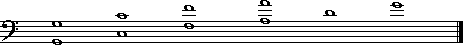
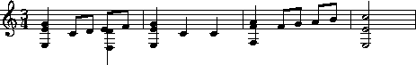

*AT:E2
*RT:0:5:10:15:19:24

**kern
in particular.
Of course the Humdrum syntax provides opportunities for an
unlimited number of representations.
In this chapter, we will consider some less common representations.
Most of the chapter will deal with the
**fret
representation -- a pre-defined Humdrum
representation for fretted instrument tablatures.
However, we will begin with a grab-bag of unorthodox representations.
The Humdrum syntax provides a framework within which different symbol systems can be defined. Each symbol system or representation scheme is denoted by a unique exclusive interpretation. There is no restriction on the number of schemes that can be used or created by the user. Each time you create a new exclusive interpretation, all of the alphanumeric characters can be redefined. A representation scheme springs into existence simply by encoding some data.
In research activities, it is common to create representation schemes for a specific task. A user might define a spine that represents the heart-rate (in beats per minute) of a music listener:
A scheme might be created to represent different types of contrapuntal motion:
**cardio7676747373*-
**motionsimilarcontraryparalleloblique*-
Chords might be classified -- using words:
**chordsminor.augmentedmajor*-
Or using abbreviations:
**chordsm.AM*-
Fingerings might be represented. Each hand may have a separate spine:
**finger**finger *left*right .1 1 52 .3 .5 1 52 5 *-*-
Or the hands might be combined in a single spine:
**fingerR1L1 L5 R2R35L1 L5 R2 R5*-
Time-scales might be large:
**PeriodsMedievalRenaissanceBaroqueClassicalRomantic*-
Or miniscule:
**milliseconds0.030.823.231.6*-
A user might define a highly refined special-purpose representation. For example, the following scheme is fashioned after the Benesh dance notation:
!! Kellom Tomlinson'sGavot of 1720.!! Transcribed fromFeuillet's notation.**kern**Benesh*MM120*MM120*M2/2*M2*e:*!! First Couplet!! Half Coupee4.gg| |u| | |.%|+| | | |.|=|v| | |.(| | | | |.(|-| | | |{8ff#|_| | | |2=1-----------2eem| | | | |}!! Bound._|^| | | |{.(|+| | | |4.b-| | | | |.(|+| | | |}._| | | | |{8a_|+|+| | |=2-----------!! Bouree4g| | | | |.|=| | | |4e|=| | | |}._|=| | | |4g|o| | | |!! Bouree4a_|+|+| | |=3-----------*-*-
Depending on the task, user-defined schemes can be either carefully designed, or "throw-away" concoctions created for momentary purposes. The Humdrum Reference Manual provides detailed advice on how to go about designing special-purpose Humdrum representations.
For the remainder of this chapter we will examine a
pre-defined representation scheme for fretted instrument tablatures.
Although not all users will be interested in the **fret
representation, it provides an instructive contrast to the score-
and MIDI-based representations that we have relied on for most
of the examples in this book.
The
**fret
representation is a pre-defined Humdrum scheme that provides a comprehensive
system for representing performance aspects for fretted instruments.
The **fret
scheme is suitable for representing tablature information for
most fretted instruments, such as various guitars,
lute, mandore, theorbo, chitarrone, mandoline, banjo, dulcimer, and
even viols.
The
**fret
interpretation is not limited to equal-temperament tuning,
and so can be used to represent non-Western fretted instruments,
such as the oud and the sitar.
The
**fret
representation is performance-oriented rather than notationally-oriented.
Thus
**fret
is not suitable for distinguishing different visual renderings --
such as differences between traditional French or German lute tablatures.
Some other Humdrum representation should be used if the user's
goal is to distinguish different forms of visual signifiers.
The basic pitches produced by fretted instruments depend on three factors: (1) the relative tuning of the strings with respect to each other, (2) the absolute overall tuning of the instrument, and (3) the position of the frets. Three tandem interpretations allow the user to specify each of these aspects.
The absolute tuning of an instrument is indicated by encoding
the pitch of the lowest string using the *AT: tandem interpretation.
For the common six-string guitar, the lowest pitch is normally tuned
to E2, and so would be encoded with the following tandem interpretation:
*AT:E2
The *AT: interpretation makes use of
**pitch-type
pitch designations and may also include cents deviation.
For example, an instrument tuned 45 cents sharp might be represented as
*AT:E2+45.
Encoding the absolute tuning is optional with
**fret;
when absent, a default tuning of E2 will be assumed
by various processing tools.
A second tandem interpretation (*RT:) specifies the relative
tuning as well as the number and arrangement of strings.
Some instruments pair strings together in close physical proximity
so that two strings are treated by the performer as a single
virtual "string."
Such paired strings are referred to as
courses.
For example, the 12-string guitar is constructed using 6 courses,
and is played much like a 6-string guitar -- except that two strings
sound together, rather than a single string.
The *RT: tandem interpretation encodes the relative
tuning of each string by specifying the number of semitones
above the lowest string -- where each course is delineated by a colon (:).
In Example 18.1 three sample tunings are shown.
Example (a) defines the most common relative tuning for the six-string
guitar.
Successive strings are tuned 0, 5, 10, 15, 19, and
24 semitones above the lowest string.
Example 18.1. Sample Tunings for Fretted Instruments.
(a) Common 6-string guitar.
(b) Common 12-string guitar.
*AT:E2
*RT:0:5:10:15:19:24
(c) Vieil accord lute.
*AT:E2
*RT:0,12:5,17:10,22:15,27:19,19:24,24

*AT:G2
*RT:0,12:5,17:10,22:14,14:19,19:24,24
Example (b) defines the most common relative tuning for the 12-string guitar. The six courses are delineated by colons and the tuning of strings withint courses are delineated by commas. In this case, the lower four courses consists of two strings tuned an octave apart, whereas the upper two courses consist of paired unison strings.
Example (c) shows the most common tuning of the 6-course lute -- a tuning referred to as the so-called vieil accord: G2, C3, F3, A3, D4, and G4. During the first half of the 16th century, it was common to tune the lower three courses in octaves.
For non-Western and other instruments, it is possible to encode non-integer semitone values for various strings, such as a string tuned 9.91 semitones above the lowest string.
In addition to the absolute and relative tunings,
**fret
also allows the user to specify the tuning of successive frets
using the FT: tandem interpretation.
In Western instruments, frets are normally placed in semitone increments.
For a 12-fret instrument, this semitone arrangement may be explicitly
represented using the following tandem interpretation:
*FT:1,2,3,4,5,6,7,8,9,10,11,12
Each successive numerical value indicates the number of semitones above the open string for successive fret positions. The interpretation begins with the tuning of the first fret rather than the tuning of the open string. The above interpretation is similar to the default fret tuning -- which is an increase of precisely one-- itone for each successive fret. The default fret tuning is not limited to 12 frets as in the above example. An instrument constructed with nine 1/4-tone fret positions can be encoded as follows:
*FT:.5,1,1.5,2,2.5,3,3.5,4,4.5
The only restriction imposed by *FT: is that all strings must have
identical fret distances.
That is, if the first fret is positioned 1 semitone above the open
string, then this relative pitch arrangement must be true of all strings.
The
**fret
representation distinguishes three types of data tokens:
tablature-tokens, rests, and barlines.
Tablature-tokens
encode information regarding the fret/finger positions,
the manner by which individual strings are plucked (or bowed),
pitch-bending, vibrato, damping, harmonics, and other effects.
The actions of individual fingers can also be represented.
Each tablature-token consists of a several subtokens in the
form of Humdrum multiple-stops.
Subtokens are delimited by spaces and represent individual courses/strings.
A six-string (or six-course) instrument will require six subtokens
in each tablature-token.
For example, the following tablature token encodes the plucking of
the first and sixth string:
| - - - - |
Subtokens consist of up to five component elements: (1) the string/course status, (2) fret position, (3) bowing/strumming, (4) finger action, and (5) percussive effects. In addition, the tablature-token can encode bowing and strumming information.
In the
**fret
representation, the status of a string/course can occupy one of sixteen states.
An
inactive
string is signified by th-nus sign (-).
An ordinary
plucked
string is represented by the vertical line (|).
Plucking near the bridge (plucked ponticello) is represented by
the slash character (/).
Plucking near the tone-hole (plucked sul tasto) is represented by
the backslash character (\).
The repeated
plucked-tremolo
(commonly used on the mandoline) is
represented using the octothorpe or hash character (#).
Pizzicato
is represented by the small letter `z'.
Normal bowing of a string is represented by the plus sign (+);
ponticello
bowing is represented by the open parenthesis `(' whereas
sul tasto
bowing is represented by the closed parenthesis `)'.
Spiccato
(bouncing the bow) is represented by the open curly brace `{'.
Col legno
(using the wood of the bow) is represented by the closed
curly brace '}'.
Tremolo bowing
is represented by the ampersand (&).
Natural harmonics
and
artificial harmonics
are represented by the lower-case `o' and upper-case `O'
respectively.
String
ringing
is denoted by the colon (:), and the
damping
of a string is denoted by the small letter `x'.
By way of illustration, the following tablature-token represents a six-string or six-course instrument, where the first through sixth strings are respectively (1 and 2) plucked, (3) damped, (4) bowed, (5) plucked sul tasto, (6) inactive.
| | x + \ -
Note that the layout of the strings in a tablature-token always corresponds to the tuning specified in the relative-tuning interpretation. In most representations, the lower-pitched strings will be toward the left side of the tablature token.
Fret-position information is indicated through the use of numbers, with the first fret signified by the number `1'. Fret-position numbers are encoded immediately to the right of their respective string/course. For example, the following tablature-token encodes a six-string/course instrument in which the second and third strings are both stopped at the second fret.
| |2 |2 | | |
Example 18.2 shows a sample passage for guitar with a corresponding
**fret representation displayed beneath.
The **fret representation does not encode duration
information.
It is common to join the **fret spine with a
**recip
spine representing the nominal duration data.
In example 18.2 a
**kern
spine is also shown indicating
the pitches in the **fret representation.
Example 18.2. J.S. Bach, Anna Magdalena Bach Notebook Menuet II. Guitar arr.

**recip**kern**fret** *AT:G2** *RT:0,12:5,17:10,22:14,14:19,19:24,24*M3/4**M3/4=1=1=14E e g- |4 - - - |08c- : : |3 : :8d- : : : |0 x8D d e- |2 : : |2 :8f- : : : |3 :=2=2=24E e g- |4 : : : |04c- : : |3 : :4c- : : |3 : x=3=3=34F f a- |5 : : : |2W8f- : : : |3 :8g- : : : : |08a- : : : : |28b- : : : : |4=4=4=42E e cc- |4 : : : |5v*-*-*-
The **fret
representation also provides several short-hand abbreviations
for common ornaments and effects.
Trills are indicated by the letters `t' (one semitone) and `T'
(two semitones).
Mordents are indicated by the letters `m' (one semitone) and `D'
(two semitones).
Inverted mordents are indicated by the letters `w' (one semitone) and `W'
(two semitones).
Turns are indicated by the letters `S' and `$' (for the inverted
"Wagnerian" turn).
Two types of vibrato are distinguished: `v' for transverse vibrato
and `V' for lateral vibrato.
Pitch bending is signified by the tilde (~).
Apart from tablature-tokens,
**fret also permits the encoding of rests and barlines.
Rests tokens are denoted simply by the lower-case letter `r'.
Barlines are represented using the "common system" for barlines
used by **kern and other representations.
Bowing-direction
and
strumming
information is prepended to the beginning of the tablature-token.
The direction of bowing/strumming is encoded using the left
and right angle brackets:
>
means to bow/strum from the strings on the left side of the
representation toward the strings on the right side of the representation.
(On most instruments this means strumming
"downward" -- from the lowest- to the highest-pitched strings.)
The left angle bracket:
<
means to strum in the opposite direction.
A rough indication of the speed of bowing/strumming can be
represented by duplicating these signifiers.
For example,
>>
means a slower "downward" bow/strum, and
<<<
means an especially slow "upward" bow/strum.
The percent sign (%) is used to signify the so-called
rasgueado
-- or flamboyant Spanish strum.
Once again these signifiers appear at the beginning of a tablature-token
-- whenever they are encoded.
Strumming all 6 open strings downward on a commonly-tuned guitar
is represented as:
*AT:E2
*RT:0:5:10:15:19:24
>| | | | | |
Notice that there is no space between the right angle bracket and the first vertical bar.
The
**fret
representation also permits the optional encoding of
fingering
information.
For the plucking-hand (normally right hand),
traditional musical abbreviations are used:
P (pollex) for the thumb, I (index) for the index finger,
M (medius) for the middle finger, A (annularis)
for the ring finger, and Q (quintus) for the little finger.
In addition, the lower-case letter p is used to signify
the palm of the hand.
Note that these letters are applied only to the `plucking' hand.
In the case of the `fret-board' hand,
the lower-case letters
a-e
are used to denote the thumb, index finger,
middle finger, ring finger, and little fingers, respectively.
Like the fret information, fingering information is encoded
immediately to the right of the string to which the information applies.
By way of illustration, the finger actions used in the above example
may be made explicit as follows:
>|P |2bP |2cP |P |P |P
The strum is carried out by the thumb, while the index and middle fingers of the fret-hand stop the second and third courses/strings at the second fret. In the following continuation of this representation, the first course/string is replucked by the thumb. With the exception of the second and third courses/strings, the other strings are allows to ring.
>|P |2bP |2cP |P |P |P
>|P xIM xIM : : :
Notice that in damping the vibrations of the second and third strings, both the index and middle fingers of the `pluck' hand are used on both strings.
On rare occasions, guitarists will substitute fingers on the fret-board while a string remains sounding. The following example illustrates such a finger-substitution where the middle finger is replaced by the ring finger:
| |2b |2c | | |
: :2b :2d : : :
Note that in the **fret
representation, no special signifiers are provided for
so-called `hammer-on' or (ascending-slur),
nor for the so-called `pull-off' or (descending-slur).
During the ascending-slur, the sound is produced simply
by engaging the next fret.
This can be represented in **fret
by using the "let ring" signifier (:) in conjunction
with the appropriate fret notation.
The descending-slur can be similarly notated.
Four types of "percussion effects"
can be represented using **fret.
The two most common
tambours
involve tapping on the bridge (represented by the lower-case letter `u')
and tapping on the strings near the bridge (represented by the
upper-case letter `U').
A simple `tap' on the top-plate is represented by the lower-case letter `y',
whereas a lower-pitched `thump' on the top-plate is represented by
the upper-case letter `Y'.
When sounded alone, these signifiers appear on a line by themselves.
When sounded in conjunction with a plucked or (uncommonly) bowed string,
these signifiers appear at the beginning of the tablature-token.
The complete system of signifiers used by
**fret
is summarized in Table 18.1.
Table 18.1. Signifiers used by **fret.
Fret-board (left) Hand 1 first fret position 2 second fret position, ... 11 eleventh fret position, etc. 0 open string (not necessarily sounded) ~ bend up in pitch v vibrato (transverse) V vibrato (lateral) t trill (1 fret distance) T trill (2 frets distance) m mordent (1 fret distance) D mordent (2 frets distance) w inverted mordent (1 fret distance) W inverted mordent (2 frets distance) S turn $ inverted (Wagnerian) turn a thumb (of fret hand) b index finger (of fret hand) c middle finger (of fret hand) d ring finger (of fret hand) e little finger (of fret hand) n no finger (of fret hand) Pluck (right) Hand - unplucked or unactivated string | plucked string (normal) / plucked string -- near bridge (ponticello) \ plucked string -- near tone-hole (sul tasto) # tremolo (plucked, ala mandoline) z pizzicato : let string ring x damp string o natural harmonic O artificial harmonic + bow (normal) ( bow -- near bridge (ponticello) ) bow -- toward fret-board (sul tasto) { spiccato } col legno (with wood of the bow) & tremolo (bowed) > strum from low notes to high notes (= down-bow) < strum from high notes to low notes (= up-bow) >> slower down-strum; slower down-bow >> slower up-strum; slower up-bow >>> very slow down-strum; very slow down-bow <<< very slow up-strum; very slow up-bow % rasgueado (Spanish strum) P pollex: thumb (of pluck hand) I index: index finger (of pluck hand) M medius: middle finger (of pluck hand) A annularis: ring finger (of pluck hand) Q quintus: little finger (of pluck hand) p palm (of pluck hand) N no finger (of pluck hand) u tambour (tap on bridge) U tambour (tap on strings near bridge) y `tap' on top-plate Y `thump' on top-plate
A number of pitch-related Humdrum commands
accept **fret encoded data as inputs, including
cents,
freq,
kern,
pitch,
semits,
solfg,
and
tonh.
In this chapter we have tried to reinforce the lesson that
**kern
is only one of an unbounded number of existing and possible Humdrum
representations.
As a Humdrum user, you are free to concoct your own representations
to better address the kinds of information you are interested in
manipulating.
As long as the resulting representation conforms to the Humdrum syntax,
the most important Humdrum tools can still be used to manipulate
your data.